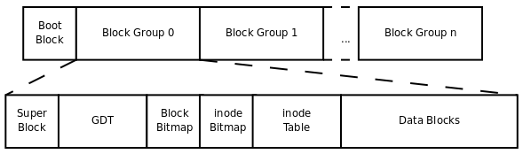

Linux文件系统
Posted on 2017-03-12(Sunday) 22:30 in Linux
Linux 文件系统EXT2
本篇文章旨在介绍Linux的EXT文件系统，有错误处也请指点，共同学习。
linux文件系统数据存放
super block：记录整个文件系统的整体信息，包括inode与block总量，使用量，剩余量以及文件系统的格式与相关信息。
inode：记录文件的属性，一个文件一个inode，这些属性包括文件权限和文件属性，还要记录此文件的数据所在的block号码。
block：记录文件实际的内容，文件过大会占用多个block。
在读取我们需要的数据的时候，在读到inode节点中文件数据存放位置后就可以一次性读取所有的内容（索引式文件系统）。
EXT2文件系统
linux文件系统已经发展到EXT4，本篇文章还是拿EXT2来讲解。EXT2文件存储有时容量会很大，之前所说的inode与block大小又是在文件系统默认格式化时就已固定，这时候每个文件的inode与block在一起会很麻烦，EXT2所以在格式化的时候会区分多个块组（block group），每个块组一个独立的inode与block系统。如下所示

Data block：用来放置文件内容，默认大小有1kb，2kb，4kb。
注意：格式化完后的block大小不能再次改变。 一个block当中存放一个文件，如果文件过小同样也是只能存放一个文件。 文件过大可以存放在多个block当中。
inodetable：每个文件的inode
inode固定大小128bytes，每个文件占用一个inode
在读取文件之前 …
Continue reading